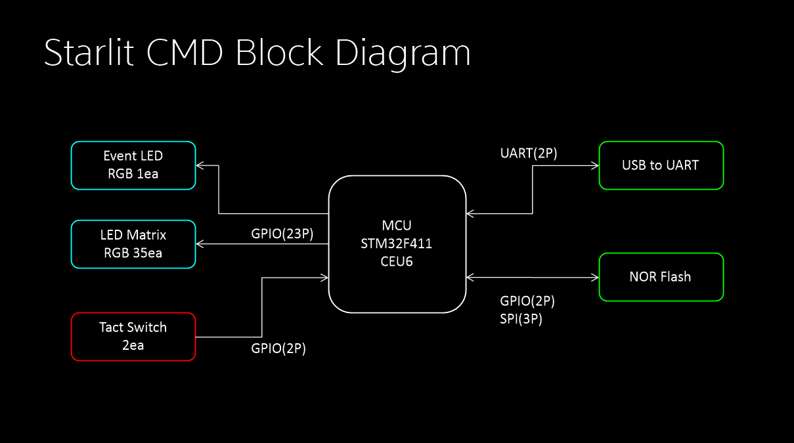

HARDWARE DOCUMENTATION
Starlit CMD
나만의 LED 패턴을 위한 작은 보드.
Starlit CMD는 5 × 7 LED Display와 2개의 버튼을 갖춘 Mini LED Matrix 보드입니다. Starlit으로 작성한 패턴을 보드에서 실행하고, 나만의 빛을 디자인하세요.
※ 참고 : 이 보드는 판매되지 않는 보드입니다. 아래 Architecture는 무료로 공개되오니 해당 Architecture에 맞게 제작 후 사용하시면 됩니다.
PCB 관련 정보는 JLCPCB 기준 규격으로, Top면만 실장 후 Bottom면은 별도의 작업 후 사용하는 방식입니다.

보드 한눈에 보기
- Core
- STM32F411CEU6
- CPU / Clock
- ARM Cortex-M4 / 100 MHz
- Display / Input
- 5 × 7 LED / 2 Buttons
- Memory
- 2 MB
- Code Unit / Variable
- 48 KB / 32 KB
- IO
- LED Matrix, Switch, Serial(460800baud)
Unpacked에 소개된 사양 기준입니다. 버전별 상세 사양은 CMD 보드 Spec 자료를 확인하세요.
문서 & 다운로드
항목별 자료를 버전 단위로 확인하세요. 아래 버전은 양식 예시이며, 실제 자료는 등록 준비 중입니다.
- Core
- STM32F411CEU6
- CPU / Clock
- ARM Cortex-M4 / 100 MHz
- Display / Input
- 5 × 7 LED / 2 Buttons
- Memory
- 2 MB
- Code Unit / Variable
- 48 KB / 32 KB
- IO
- LED Matrix, Switch, Serial
Unpacked에 소개된 사양 기준입니다. 실제 제작 사양은 기준 사양과 달라질 수 있습니다.
Starlit CMD 회로도.
최신 버전 : v1.2 (USB C to C Cable 대응 설계, Ghosting Effect 현상 방지회로 추가)
| 버전 | 등록일 | 주요 내용 / 변경 사항 | 파일 형식 | 다운로드 |
|---|---|---|---|---|
| v1.2최신 버전 | 2026.10.24 | USB C to C 대응 설계(v1.1) Ghosting 현상 방지 회로 추가 | 다운로드 |
Starlit CMD 거버
Gerber의 Bottom에서 StarStarStar 로고 부분은 예시 내용으로, 다른 로고로 대체 가능합니다.
| 버전 | 등록일 | 주요 내용 / 변경 사항 | 파일 형식 | 다운로드 |
|---|---|---|---|---|
| v1.2최신 버전 | 2026.10.24 | USB C to C 대응 설계(v1.1) Ghosting 현상 방지 회로 추가 | ZIP | 다운로드 |
Starlit CMD 펌웨어
보드 및 버전 확인 후 사용 부탁드립니다.
| 버전 | 등록일 | 주요 내용 / 변경 사항 | 파일 형식 | 다운로드 |
|---|---|---|---|---|
| v1.3STM32F411CEU6 25Q16 NOR Flash | 2026.10.24 | Starlit CMD 펌웨어 1.3버전 | BIN | 다운로드 |
Starlit CMD BOM
회로도 및 Gerber 버전에 맞게 사용 부탁드립니다.
비용 저감 차원에서 Top면만 실장, Bottom면은 수작업 진행하는 것을 권장합니다.(양면 실장시 비용 대폭 증가)
Starlit CMD Block도
실제 동작 정보이오니 참고용으로 활용해 주시기 바랍니다.
